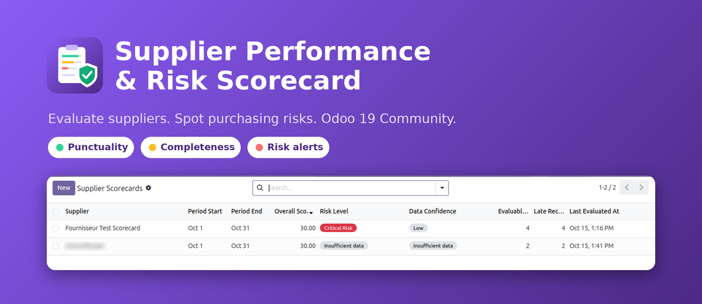
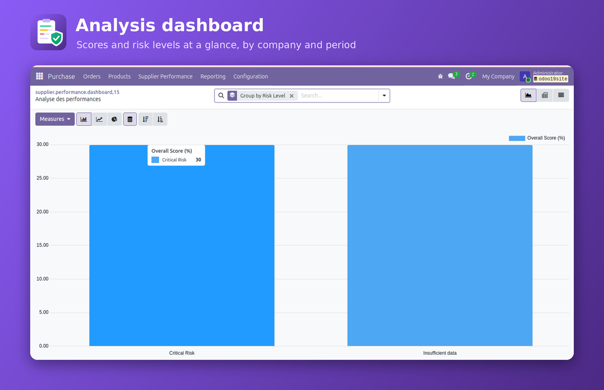

Evaluate supplier delivery performance, monitor receipt completeness, identify potential risks, and track corrective actions through a centralized supplier evaluation system.

Monitor supplier performance using company-level KPIs and visual indicators.

Odoo 19 Community Edition
Required modules: purchase_stock and
mail, in addition to their dependencies.
French translations are included.
Delivery timeliness is calculated using the scheduled dates currently recorded on completed receipts. Receipt completeness is based on quantities currently received.
Each saved evaluation preserves its score and calculation notes, providing a historical record of the assessment.
Developed by Asma Missawi